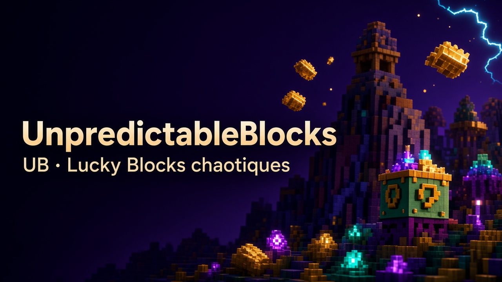

Gameplay
Comment jouer
How to play
Un thème = une identité fixe. Ce qui change au cassage, c’est le palier de chance.
One theme = one fixed identity. What changes on break is the luck tier.
-
Trouve un Lucky Block
Find a Lucky Block
Spawn naturel, craft, créatif, commandes, ou presets monde (Dense / Flat / Skyblock).
Natural spawn, craft, creative, commands, or world presets (Dense / Flat / Skyblock).
-
Regarde ta Chance
Check your Luck
Le HUD sur la barre d’action affiche ta luck (−100…+100). Plus elle est haute, plus le tier HIGH est probable.
The action-bar HUD shows luck (−100…+100). Higher luck means more HIGH tiers.
-
Casse le bloc
Break the block
Loot, structure, effets, mob custom… plus des variations bonus tirées au hasard. Survive, ramasse, combats ou discute.
Loot, structure, effects, custom mob… plus random bonus variations. Survive, loot, fight, or talk.
-
Ouvre le Journal
Open the Journal
Item Journal des quêtes (aussi bouton inventaire). Termine l’objectif du thème pour cartes, titres et paliers 8 / 16 / 24 / tous.
Quest Journal item (also an inventory button). Finish the theme objective for cards, titles, and milestones 8 / 16 / 24 / all.
Booster (ou saboter) la chance
Boost (or ruin) your luck
| ID / outil | Effet | Effect |
|---|---|---|
luck_emerald_dust |
+10 chance | +10 luck |
luck_blaze_curse |
−10 chance | −10 luck |
| Pari Luck / Luck bet | Sneak + poussière en main secondaire → +25 luck effectif | Sneak + dust in off-hand → +25 effective luck |
| Aura de chunk | Pousse brièvement la luck après exploration | Briefly pushes luck after exploring |
Exception volontaire : l’item Lucky mystère tire un thème au hasard parmi les thèmes du mod.
Voluntary exception: the Mystery Lucky item rolls a random theme from the mod.
Pourcentages HIGH / NEUTRAL / LOW
HIGH / NEUTRAL / LOW percentages
Luck effective = luck du bloc + luck du joueur (−100…+100). Tirage pondéré dans LuckResolver.
Effective luck = block luck + player luck (−100…+100). Weighted roll in LuckResolver.
high = (L+100)/200 · low = (100−L)/200 · neutral = 1 − |(L+100)/200| · puis normalisation
| Luck | HIGH | NEUTRAL | LOW |
|---|---|---|---|
-100 | 0.0% | 50.0% | 50.0% |
-75 | 6.7% | 46.7% | 46.7% |
-50 | 14.3% | 42.9% | 42.9% |
-25 | 23.1% | 38.5% | 38.5% |
0 | 33.3% | 33.3% | 33.3% |
+25 | 45.5% | 27.3% | 27.3% |
+50 | 60.0% | 20.0% | 20.0% |
+75 | 77.8% | 11.1% | 11.1% |
+100 | 100.0% | 0.0% | 0.0% |
À +100 : 100 % HIGH. À −100 : 50 % LOW / 50 % NEUTRAL (pas 100 % LOW — asymétrie du code). Drop de carte sur HIGH : 12 % par défaut. Pari Luck : +25.
At +100: 100% HIGH. At −100: 50% LOW / 50% NEUTRAL (not 100% LOW — code asymmetry). Card drop on HIGH: 12% default. Luck bet: +25.
Tiers de cassage
Break tiers
- HIGH — généreux (loot, buffs, structures)generous (loot, buffs, structures)
- NEUTRAL — mixte / sketch comiquemixed / comedy sketch
- LOW — personnel (pièges, hostiles, malus)personal (traps, hostiles, debuffs)
